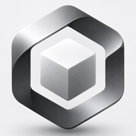

模型自動儲存在此裝置瀏覽器。換手機或平板時，請先匯出 GLB 備份，再到另一台裝置匯入。GLB 會附帶機型資訊；也可另外下載 JSON 設定備忘。
點選模型、自由旋轉，讓想法立體成形。
新增模型、匯入 STL，或用觸控筆畫一個輪廓。
適合名字牌、裝飾底座、外輪廓拉伸。不是自動將平面繪畫轉成完整雕塑；請避免線條自我交叉。
先在畫布選取主要模型 A，第二個模型 B 可選作為加上、扣除或交集。請先調整兩個模型的大小與位置。
結果會取代兩個原模型。只適合封閉實體模型；匯入的破損網格可能無法成功。建議先下載 GLB 備份。
在選取模型上，沿 Z 軸建立貫穿圓孔。適合底座、墊片及簡單容器，並非任意曲面雕刻。
偏移以模型外框中心為基準。孔會自動穿過模型高度，匯出 STL 前仍須檢查最薄處壁厚。
以指定軸向的平面切開模型，保留切開後的兩個封閉部分，方便分件列印。
切割完成後會建立兩個模型並保留原始空間位置；可再透過移動工具將它們分開。
檢查模型是否有開放邊、非流形邊、零面積三角形；這是快速檢查，不等於完整的列印認證。
簡易整理無法自動補上大破洞或保證水密；複雜模型仍建議用 Blender／MeshLab 修補。
靠邊保留 5 mm 安全距離；每次都會把選取模型的最低點放到 Z = 0。